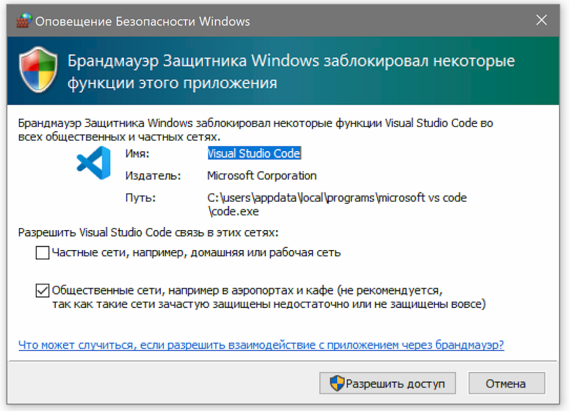

VS Code для вёрстки
Чтобы стать профессиональным разработчиком, нужно уметь пользоваться инструментами. Разберёмся, как и в чём написать и запустить HTML-код на своём компьютере.
Для того, чтобы написать код, сгодится вообще любой текстовый редактор. Подойдёт даже «Блокнот» на вашем компьютере (но в нём очень неудобно всё делать). Мы скачаем и установим хороший редактор, заточенный под веб-разработку. Покажем всё на примере Visual Studio Code.
Зайдите на сайт и скачайте редактор. Если у вас Windows, то нажмите на любую из синих кнопок. Если OS X или Linux — нажмите Other platforms.
Установка пройдёт как обычно — нужно запустить файл VSCodeUserSetup, много раз нажать «Далее» и поставить пару галочек.
Свежеустановленный VS Code встречает нас экраном с большим количеством ссылок. С ними можно познакомиться позже, а сейчас нужно настроить всё для работы.
Хорошо бы, чтобы во время работы все нужные файлы лежали в одной папке (пока проект маленький, так можно делать). Для этого добавим рабочую папку, чтобы VS Code показывал нам только её содержимое.
По шагам на скриншоте:
После этого слева появится панель Explorer с пустым рабочим пространством Untitled (Workspace). Мы создали папку, давайте её наполним.
После создания папка пустая. Щёлкнем правой кнопкой по заголовку personal_page и добавим три файла, которые понадобятся в работе — index.html и style.css и script.js.
Сейчас все три файла открыты во вкладках, и между ними не всегда удобно переключаться. Чтобы было удобнее, код со стилями можно перенести в другую часть окна, например, вниз. Для этого нажмите правой кнопкой по вкладке со style.css и выберите split down, чтобы увидеть результат.
Пока отредактируем только index.html (файл с разметкой). Если у вас уже есть какой-нибудь код, напишите его, или используйте готовый — мы, например, возьмём код из интерактивных курсов.
Самый простой способ — открыть папку с файлами через проводник и запустить файл index.html. Вы увидите результат вёрстки в браузере, но это не слишком удобно — при любых изменениях придётся переходить в браузер и обновлять страницу.
Давайте настроим всё так, чтобы наша страничка открывалась сама и обновлялась, если вы что-то изменили в разметке или стилях.
Для этого нам понадобится расширение Live Server. Найти его можно прямо в VS Code (пятая иконка в меню слева) — введите название и нажмите Install. Другой способ — скачать Live Server из магазина расширений, но это менее удобно.
После установки расширения Windows может попросить разрешение на доступ к сети. Это нужно, чтобы запускать локальный сервер, Разрешайте, это безопасно.
Чтобы запустить код, нажмите кнопку Go Live на нижней панели.